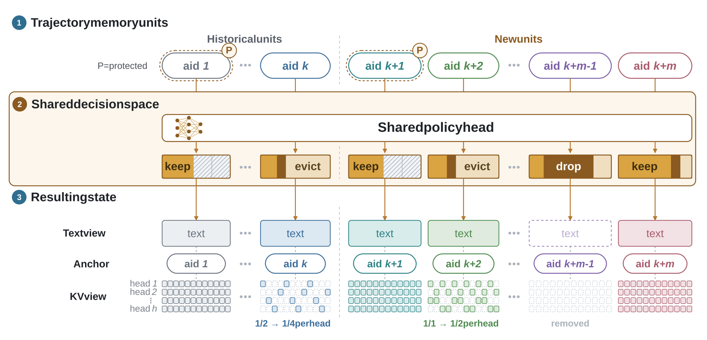
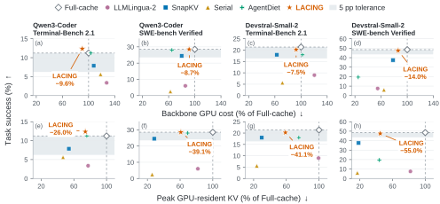
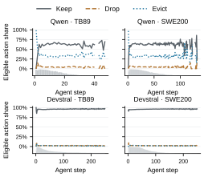
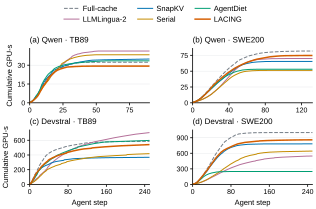
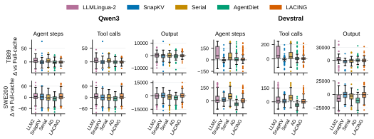
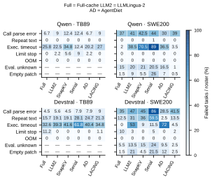

Anchor both views
A persistent aid links each memory unit's text and KV entries as text spans shift and cache coverage changes.
Email: wenqialuo4-c@my.cityu.edu.hk, fangkaiyang@microsoft.com
One policy for text and KV memory.
Savings across the full agent trajectory.
Across multi-turn agent interactions with Web sites, services, and software tools, accumulated history increases prompt length and KV-cache memory. Independent compression overlooks both the coupling between these views and its effects on later turns. We formulate joint compression as a sequential decision problem over persistent memory units. LACING uses stable anchors to link each unit's text to its KV entries across heads. Conditioned on textual features and evolving KV state, one categorical policy selects preservation, text deletion, or headwise KV reduction.
We train the policy online from task-level rollout groups to minimize cumulative backbone GPU cost subject to utility retention relative to a fixed full-cache reference. Separate cost and utility credit mechanisms assign downstream savings and progress regressions to individual compression actions.
We evaluate LACING with two backbones on Terminal-Bench 2.1 and a 200-task subset of SWE-bench Verified. Across all four settings, it achieves higher task success than the four compression baselines. Relative to full-cache, it reduces backbone GPU-seconds by 7.5–14.0% and mean peak GPU-resident KV memory by 26–55%, while preserving 98.9% of full-cache's overall task-success rate. In additional shared-context tests on SCBench, LACING retains over 92% of full-cache successes on compression-sensitive key-value and code retrieval tasks.
Stable memory identities connect two views of history. A small shared policy learns which view to reduce, with the backbone frozen.

A persistent aid links each memory unit's text and KV entries as text spans shift and cache coverage changes.
A shared policy reads a 529-dimensional representation of content and current state. Feasible keep, drop, and evict actions compete in one categorical distribution.
Separate cost and utility credit connect compression actions to downstream resource savings and progress regressions across the trajectory.
keepPreserve text and current KV.
dropRemove the unit's text and remaining KV.
evictHalve each head's KV support while retaining every token in at least one head.
Across all four agent settings, LACING stays within 1.2 percentage points of Full-cache success and leads the tested compressors in task success.

| Method | Success (%) ↑ | UP (%) ↑ | GPU-s/task ↓ | Peak KV (GiB) ↓ |
|---|---|---|---|---|
| Full-cache | 11.24 ± 1.12 | 100.00 ± 0.00 | 32.37 ± 0.63 | 1.00 ± 0.00 |
| LLMLingua-2 | 3.37 ± 2.25 | 10.00 ± 0.51 | 41.31 ± 0.61 | 0.78 ± 0.01 |
| SnapKV | 7.87 ± 1.12 | 40.00 ± 1.59 | 34.90 ± 1.18 | 0.54 ± 0.01 |
| Serial | 5.62 ± 1.12 | 20.00 ± 2.34 | 38.31 ± 0.61 | 0.47 ± 0.00 |
| AgentDiet | 11.24 ± 1.12 | 50.00 ± 3.76 | 33.48 ± 0.60 | 0.76 ± 0.04 |
| LACING ours | 12.36 ± 2.25 | 70.00 ± 3.87 | 29.26 ± 0.71 | 0.74 ± 0.01 |
| Method | Success (%) ↑ | UP (%) ↑ | GPU-s/task ↓ | Peak KV (GiB) ↓ |
|---|---|---|---|---|
| Full-cache | 28.50 ± 1.00 | 100.00 ± 0.00 | 81.88 ± 2.24 | 1.86 ± 0.05 |
| LLMLingua-2 | 6.00 ± 0.50 | 17.54 ± 1.15 | 70.06 ± 0.56 | 1.52 ± 0.05 |
| SnapKV | 24.50 ± 0.50 | 52.63 ± 1.37 | 65.40 ± 1.27 | 0.53 ± 0.02 |
| Serial | 2.50 ± 0.50 | 8.77 ± 1.94 | 51.31 ± 0.94 | 0.48 ± 0.00 |
| AgentDiet | 28.00 ± 1.00 | 57.89 ± 0.39 | 53.11 ± 1.14 | 1.29 ± 0.02 |
| LACING ours | 28.50 ± 0.50 | 61.40 ± 1.52 | 74.78 ± 2.39 | 1.13 ± 0.02 |
| Method | Success (%) ↑ | UP (%) ↑ | GPU-s/task ↓ | Peak KV (GiB) ↓ |
|---|---|---|---|---|
| Full-cache | 21.35 ± 1.12 | 100.00 ± 0.00 | 584.78 ± 7.31 | 3.66 ± 0.06 |
| LLMLingua-2 | 8.99 ± 1.12 | 36.84 ± 3.45 | 704.32 ± 32.86 | 3.64 ± 0.05 |
| SnapKV | 17.98 ± 1.12 | 73.68 ± 4.23 | 368.62 ± 10.24 | 1.10 ± 0.04 |
| Serial | 5.62 ± 2.25 | 21.05 ± 0.46 | 418.08 ± 5.49 | 0.87 ± 0.02 |
| AgentDiet | 17.98 ± 1.12 | 73.68 ± 5.07 | 597.74 ± 19.16 | 2.76 ± 0.07 |
| LACING ours | 20.22 ± 1.12 | 73.68 ± 4.17 | 541.09 ± 13.83 | 2.16 ± 0.06 |
| Method | Success (%) ↑ | UP (%) ↑ | GPU-s/task ↓ | Peak KV (GiB) ↓ |
|---|---|---|---|---|
| Full-cache | 48.50 ± 0.50 | 100.00 ± 0.00 | 999.23 ± 33.40 | 5.77 ± 0.02 |
| LLMLingua-2 | 7.50 ± 0.50 | 13.40 ± 1.57 | 546.90 ± 6.40 | 4.73 ± 0.11 |
| SnapKV | 37.50 ± 1.00 | 59.79 ± 1.86 | 781.97 ± 3.30 | 1.06 ± 0.02 |
| Serial | 6.00 ± 0.50 | 12.37 ± 0.40 | 642.60 ± 16.32 | 0.98 ± 0.04 |
| AgentDiet | 19.50 ± 0.50 | 32.99 ± 1.51 | 249.12 ± 6.99 | 2.53 ± 0.04 |
| LACING ours | 47.50 ± 0.50 | 74.23 ± 1.50 | 859.82 ± 24.66 | 2.59 ± 0.06 |
Mean ± SD over 3 runs. Bold marks the best compressed-method mean in each column, including ties; Full-cache is the reference. Success measures task completion; UP measures retention of Full-cache's successful tasks. GPU-s/task is calibrated backbone inference cost, including prefill, decode, and actual recomputation; compression overhead is measured separately. Peak KV is the mean per-task peak GPU-resident KV memory.
On Qwen SWE-bench, LACING matches Full-cache's 28.5% success with 4.4% more output tokens. Cost per 1,000 output tokens falls from 9.62 to 8.41 GPU-s, outweighing the longer output and reducing total backbone cost by 8.7%.
Compression is a sequence of stateful choices. Its effects depend on the backbone, repeated opportunities, and feedback from later interactions.

Backbone-specific allocation
Qwen retains 94.91–98.38% of text but only 62.52–79.32% of KV bytes. Devstral reduces both views more extensively. One fixed head per backbone adapts across both benchmarks.
Repeated opportunities
Devstral's SWE-bench policy chooses keep in 95.9% of eligible decisions, yet retains 67.46% of text and 57.43% of KV bytes. Action shares count repeated opportunities; retention measures the resulting history.
Localized feedback
On Qwen Terminal-Bench, localized and uniform credit both solve 11 tasks. Localization raises UP from 50% to 70% and lowers backbone cost by 26.3%.
Each variant trains its own Qwen policy head. Feature ablations retain all three actions; uniform credit changes both cost and utility allocation.
| Policy | Resolved tasks ↑ | UP (%) ↑ | GPU-s/task ↓ |
|---|---|---|---|
| LACING | 57 / 200 | 61.40 | 74.779 |
| KV-only | 55 / 200 | 59.65 | 76.620 |
| Text-only | 48 / 200 | 45.61 | 79.525 |
| w/o text features | 52 / 200 | 56.14 | 73.350 |
| w/o KV features | 50 / 200 | 54.39 | 75.030 |
| Uniform credit | 47 / 200 | 54.39 | 77.876 |
| Policy | Resolved tasks ↑ | UP (%) ↑ | GPU-s/task ↓ |
|---|---|---|---|
| LACING | 11 / 89 | 70.00 | 29.257 |
| KV-only | 12 / 89 | 70.00 | 34.669 |
| Text-only | 9 / 89 | 60.00 | 36.823 |
| w/o text features | 9 / 89 | 50.00 | 35.895 |
| w/o KV features | 8 / 89 | 70.00 | 36.242 |
| Uniform credit | 11 / 89 | 50.00 | 39.724 |
Ablation operating points from the manuscript. Joint selection improves the SWE-bench quality–cost balance over either single-side policy. On Terminal-Bench, KV-only solves one more task at higher cost and equal UP.
LACING finishes below Full-cache in cumulative backbone cost across all four settings. LLMLingua-2 starts below Full-cache on both Terminal-Bench backbones, then finishes above it as later interactions overtake the early advantage.

On Devstral SWE-bench, mean steps rise by 9.28 while the median falls by one. Long trajectories influence the mean; task-paired differences show the broader distribution.

LACING has fewer timeout-associated SWE-bench failures than the other compressors. Protocol parsing errors remain more frequent than with Full-cache, and symptoms can overlap within an unsuccessful trajectory.

Shared-context SCBench dialogues test whether compressed records and code remain useful to later queries.
Key-value and code retrieval
LACING preserves these successes across both retrieval backbones. Other compressors reach at most 16% UP on these tasks.
A preservation-first operating point
The ten model–task groups use native retrieval calibration in GPU-s/query. Prefix–Suffix remains harder to preserve, with 20.0% and 85.1% UP.
| Method | KVN = 500 | Prefix–SuffixN = 500 | RepoQAN = 160 | Mix-KVN = 128 | Mix-RepoQAN = 128 |
|---|---|---|---|---|---|
| Full-cache | 500 / 100 / 55.998 | 10 / 100 / 53.540 | 118 / 100 / 41.876 | 117 / 100 / 15.010 | 100 / 100 / 33.227 |
| LLMLingua-2 | 2 / 0.4 / 26.783 | 1 / 0 / 32.824 | 17 / 13.6 / 36.638 | 0 / 0 / 14.363 | 16 / 16 / 30.069 |
| SnapKV | 11 / 2.2 / 38.019 | 1 / 0 / 39.767 | 17 / 14.4 / 44.021 | 10 / 8.5 / 15.115 | 8 / 8 / 31.927 |
| Serial | 0 / 0 / 23.784 | 0 / 0 / 32.621 | 7 / 5.9 / 37.314 | 0 / 0 / 12.625 | 2 / 2 / 36.605 |
| LACING | 492 / 98.4 / 55.694 | 11 / 20 / 53.216 | 117 / 97.5 / 41.170 | 114 / 96.6 / 14.574 | 98 / 98 / 32.647 |
| Method | KVN = 500 | Prefix–SuffixN = 500 | RepoQAN = 160 | Mix-KVN = 128 | Mix-RepoQAN = 128 |
|---|---|---|---|---|---|
| Full-cache | 85 / 100 / 27.114 | 222 / 100 / 38.179 | 108 / 100 / 43.021 | 106 / 100 / 12.691 | 84 / 100 / 34.341 |
| LLMLingua-2 | 0 / 0 / 13.337 | 10 / 1.8 / 12.013 | 10 / 6.5 / 20.228 | 0 / 0 / 7.992 | 9 / 8.3 / 17.052 |
| SnapKV | 4 / 4.7 / 14.173 | 7 / 2.3 / 13.828 | 9 / 7.4 / 11.801 | 9 / 8.5 / 4.749 | 3 / 3.6 / 9.104 |
| Serial | 0 / 0 / 6.531 | 1 / 0.5 / 6.195 | 4 / 1.9 / 9.720 | 0 / 0 / 3.613 | 1 / 1.2 / 7.286 |
| LACING | 79 / 92.9 / 26.944 | 210 / 85.1 / 37.855 | 101 / 93.5 / 45.100 | 99 / 92.5 / 12.564 | 84 / 95.2 / 33.777 |
These are shared-context dialogues with generated history, without agents or tools. Retrieval and agent cost figures use their respective calibration protocols.
Project-page citation. Paper metadata will be added with the public release.
@misc{lacing2026project,
author = {Wenqiang Luo and Fangkai Yang and Yu Kang
and Lu Wang and Pu Zhao and Mingzheng Li
and Jimeng Sun and Jianfeng Liu and Jacky Keung
and Qingwei Lin and Saravan Rajmohan and Qi Zhang},
title = {LACING: Joint Prompt and KV-Cache
Compression for Multi-Turn LLM Agents},
year = {2026},
howpublished = {Project website},
url = {https://stringing.github.io/LACING-project-page/}
}